Game AI
Pendahuluan
Kecerdasan Buatan atau Artificial Intelligence merupakan bidang ilmu yang sangat populer baru-baru ini. Menurut teori kecerdasan buatan modern, kecerdasan buatan memiliki empat definisi yaitu:
- sistem/mesin yang dapat berpikir seperti manusia,
- sistem/mesin yang dapat berpikir secara rasional,
- sistem/mesin yang dapat bertingkah laku seperti manusia,
- sistem/mesin yang dapat bertingkah laku secara rasional.
Kecerdasan buatan dapat diterapkan pada suatu game atau disebut dengan Game AI. Pac-Man (1979) merupakan game pertama yang menggunakan AI sederhana (state machine). Kecerdasan buatan dalam Game dapat dibagi dalam tiga bagian, yaitu: pergerakan (movement), pengambil keputusan (decission making), dan strategi (strategy). Dasar Game AI utama ada di pergerakan dan pengambil keputusan, sedangkan strategi dapat berupa gabungan antar keduanya. Gambar berikut merupakan model Game AI.
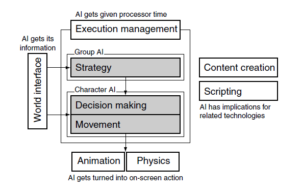
Tidak semua game menggunakan model diatas, sebagai contoh game catur yang hanya menggunakan komponen AI strategi saja. Dalam tutorial kali ini akan mencoba untuk membuat game AI pada komponen pergerakan. Pergerakan disini merujuk pada suatu algoritma untuk membuat beberapa keputusan menjadi suatu bentuk gerakan. Salah satu game yang memanfaatkan komponen AI pergerakan adalah Super Mario. Ketika karakter super mario mendekati musuh, musuh tersebut kemudian akan mengejar karakter super mario yang mendekat tadi. Musuh yang dapat bergerak mengejar secara otomatis (autonomus) dapat disebut sebagai suatu agen cerdas. Dalam hal ini, agen cerdas merupakan model AI berbasis agen yang memproduksi karakter otonom yang mengambil infomasi dari game data, kemudian memperkirakan apa aksi selanjutnya berdasarkan informasi yang didapat sebelumnya dan kemudia melakukan aksi tersebut.
Salah satu teknik movement AI yang terkenal adalah “Steering Behaviour” oleh Craig Reynolds. Steering Behaviour merupakan algoritma pergerakan yang pergerakan tersebut bukan berupa kinematik tetapi lebih kepada dinamis. Algoritma dinamis biasanya memerlukan kecepataan saat ini dan posisinya sekarang. Algoritma dinamis menghasilkan suatu gaya atau akselerasi dengan tujuan mengubah kecepatan karakter.
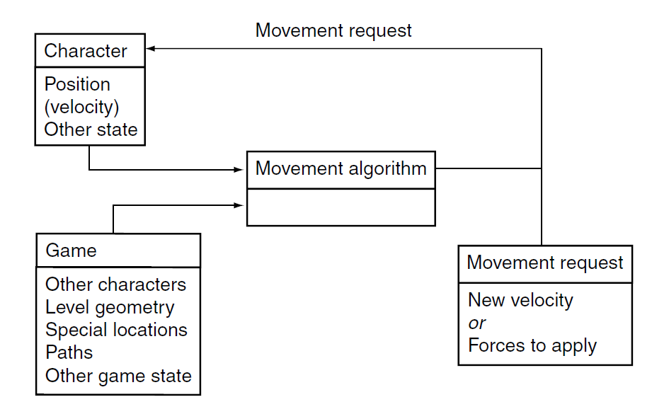
Pada praktikum ini, kita akan mencoba untuk membuat “Steering Behaviour” dengan unity jadi siapkan project 3D dengan nama “GameAI”.
Persiapan project
Setelah membuat project 3D, selanjutnya adalah lakukan langkah-langkah persiapan sebagai berikut:
PRAKTIKUM:
Buat objek quad dan gunakan sebagai pijakan. Letakkan pada transformasi seperti gambar berikut:
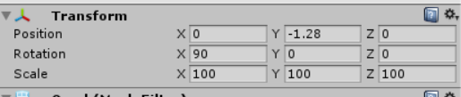Buat objek karakter player dengan objek cube dan letakkan pada posisi seperti gambar berikut.
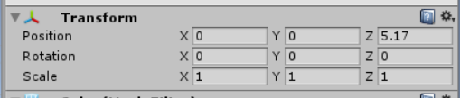
Tambahkan komponen Rigidbody pada cube kemudian tambahkan objek sphere sebagai child dari objek cube, bentuk seperti gambar berikut.
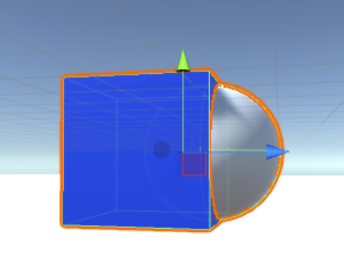
Jika memerlukan pewarnaan pada objek ini, dapat ditambahkan material sendiri.Buat objek karakter musuh dengan objek capsule dan tambahakan komponen Rigidbody. Letakkan pada posisi seperti gambar berikut.
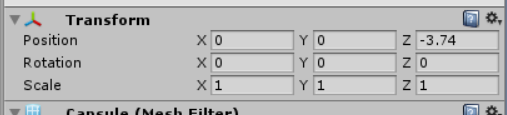
Tambahkan objek cube didalam objek capsule ini, sedemikian sehingga dapat menjadi seperti pada gambar berikut.
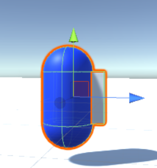
Membuat template behaviour
Sebelum membuat tingkah laku yang akan diterapkan pada suatu agen (objek game). Akan dibuat terlebih dahulu beberapa kode program yang berbentuk sistem modular untuk menambahkan atau merubah tingkah laku tersebut. Disamping itu, dalam praktikum ini, juga akan dibuat suatu tipe data bentukan sendiri (custom). Sebelum membuat template tingkah laku, berikut adalah beberapa method yang akan menjadi perhatian khusus .
Update: Method ini dipanggil sekali per frame, dan merupakan update frame utama didalam game dengan Unity.
LateUpdate: Method ini akan mulai dipanggil sekali per frame setelah perintah-perintah yang ada didalam method Update() selesai dilakukan.
Pada praktikum ini nantinya akan terdapat 5 Class kode, yaitu: Steering, Agent, AgentPlayer, AgentBehaviour, dan Seek. Setelah seluruh class tersebut selesai dibuat. Rubah script execution order dengan cara Edit Project Settings Script Excecution Order dan atur seperti gambar berikut:
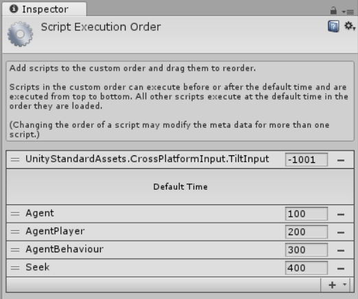
PRAKTIKUM:
Buat script baru dengan nama “Steering” class tersebut merupakan suatu tipe data bentukan (custom data type) untuk menyimpan vektor pergerakan linier dan sudut rotasi dari agen.
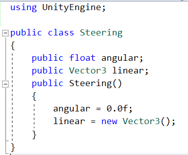Buat script baru dengan nama “AgentBehaviour”. AgentBehaviour merupakan class template untuk beberapa model tingkah laku pada agen.
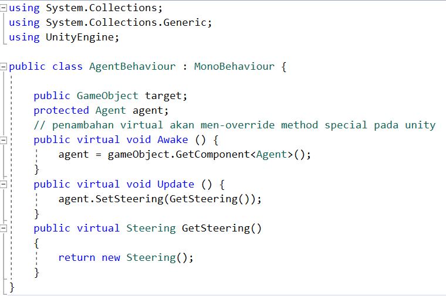Akhir dari modul template behaviour ini adalah membuat script baru dengan nama “Agent”. Agent merupakan komponen class utama untuk menerapkan perilaku pergerakan (class-class yang akan diturunkan dari AgentBehaviour) untuk agen cerdas. Masukkan script Agent ini sebagai komponen pada objek musuh (capsule)
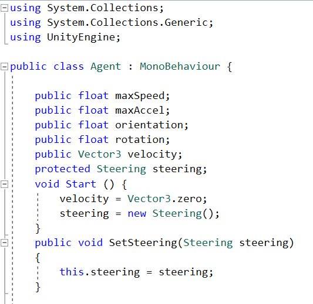 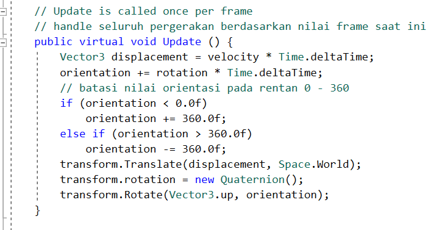 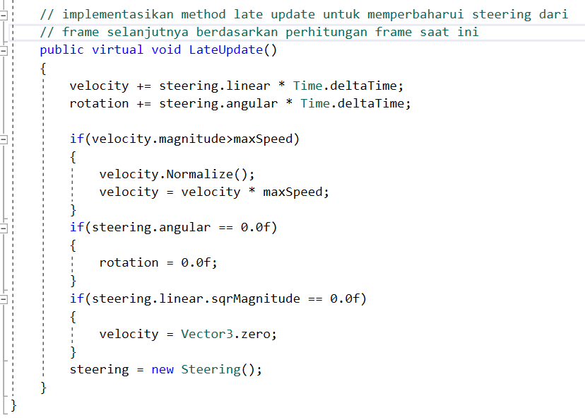
Seek
Salah satu tingkah laku pergerakan adalah “Mencari” atau “Seek”. Tingkah laku Seek pada praktikum ini adalah ketika karakter musuh didekati (pada jarak tertentu) oleh karakter player, maka karakter player akan dipandangai dan kemudian dikejar oleh karakter musuh tersebut. Untuk membuat jarak (antara player dengan musuh) digunakan Vector3.Distance antara player dan musuh. Disamping itu, untuk membuat musuh memandangi player digunakan transform.LookAt.
PRAKTIKUM:
Buat script baru dengan nama “Seek” pastikan turunan dari class “AgentBehaviour”. Masukkan script “Seek” ini pada objek musuh (capsule).
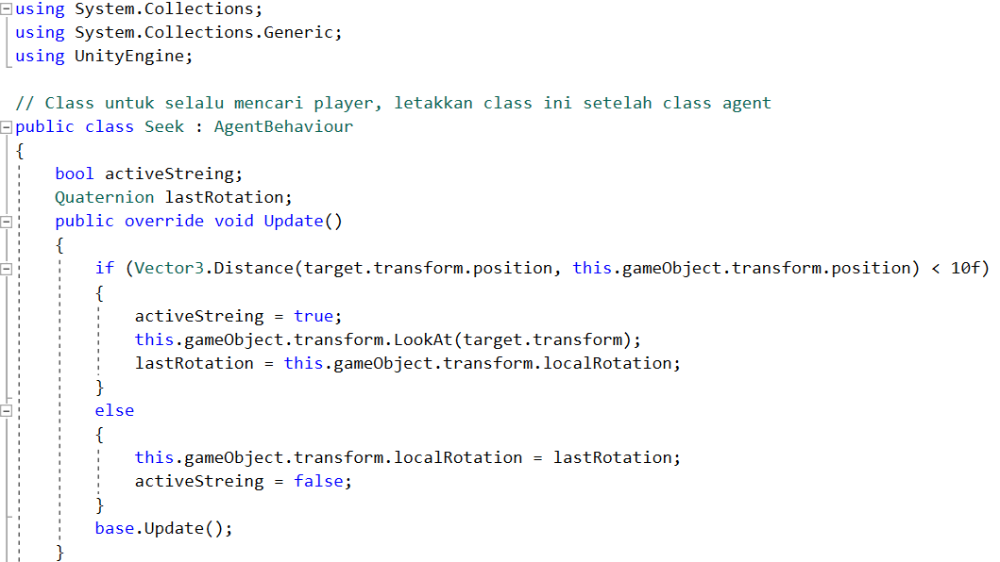 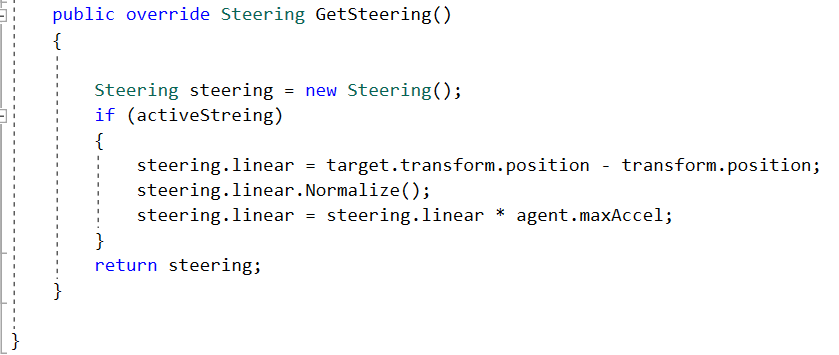
Player Control
Tahap terakhir untuk membuat game ini menjadi lebih hidup adalah mengendalikan karakter player dengan keyboard. Dengan demikian, kita dapat membuat karakter player mendekati karakter musuh dan kemudian musuh akan secara otomatis mengejar karakter player.
PRAKTIKUM:
Buat script baru dengan nama “AgentPlayer” pastikan turunan dari class “Agent”. Masukkan script “AgentPlayer” ini pada objek player (cube). Play Unity dan amati apa yang terjadi!
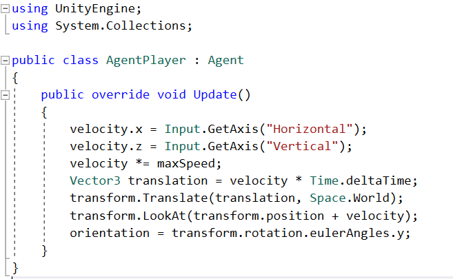
KUMPULKAN:
Screenshoot game tab dan simpan dengan nama sc_12_01.jpg
Experiment
Terapkan mekanisme Third-Person Camera atau First-Person Camera untuk membuat tampilan camera lebih menarik.
REFERENSI
- Palacios, J., (2016), Unity 5.X Game Ai Programming Cookbook, packt publishing.
- Millington, I., and Funge, J.,(2016), Artificial Intelligence for Games. CRC press.
Mekanisme Pengumpulan Praktikum Mingguan
Untuk setiap mahasiswa: Buat 1 folder beri nama NIM lengkap. Masukkan file screenshot sc_12_01.jpg. Kemudian rar atau zip folder NIM kamu tadi dan kirimkan ke ketua kelas.
Contoh: A11200904997.rar
Untuk Ketua Kelas: SIapkan folder dengan nama Kode Kelas “_12” yang berisi kumpulan praktikum setiap mahasiswa. Lalu buat rar atau zip dan kirimkan ke email dosen.
Contoh: A114401_12.rar